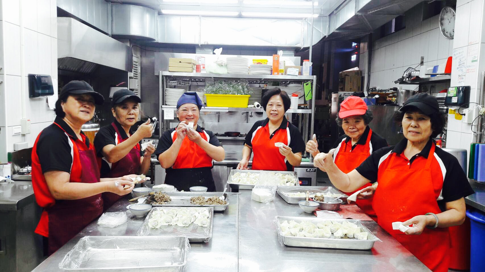

我們的團隊

古今車用中｜景觀志工餐廳
由一群熱心的志工組成，每位志工在這裡製作美味的蔬食餐點，為各地提供既美味、又無負擔的蔬食料理。我們的餐廳不僅注重健康飲食，還融合了景觀設計，讓每位來訪者都能在優美的環境中享受美食。我們歡迎更多的人加入我們的行列，讓每一位來訪者都能感受到家的溫暖與自然的和諧。

由一群熱心的志工組成，每位志工在這裡製作美味的蔬食餐點，為各地提供既美味、又無負擔的蔬食料理。我們的餐廳不僅注重健康飲食，還融合了景觀設計，讓每位來訪者都能在優美的環境中享受美食。我們歡迎更多的人加入我們的行列，讓每一位來訪者都能感受到家的溫暖與自然的和諧。